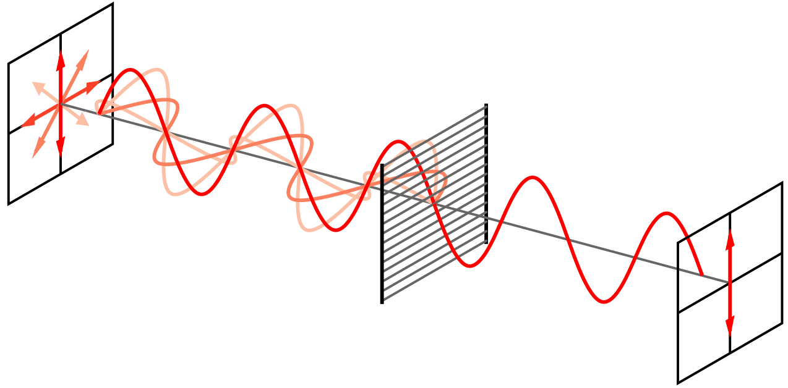
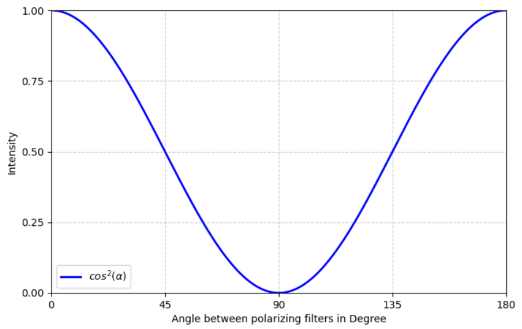
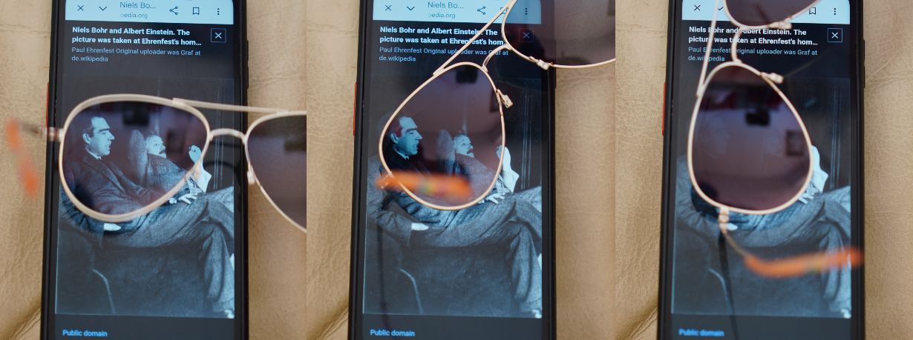
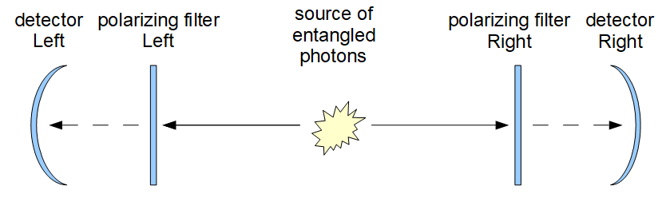
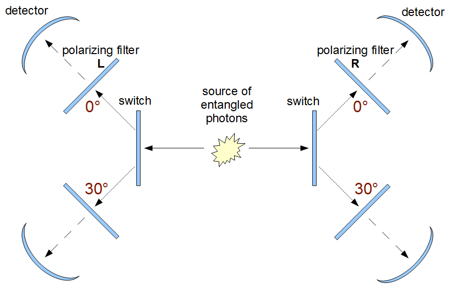
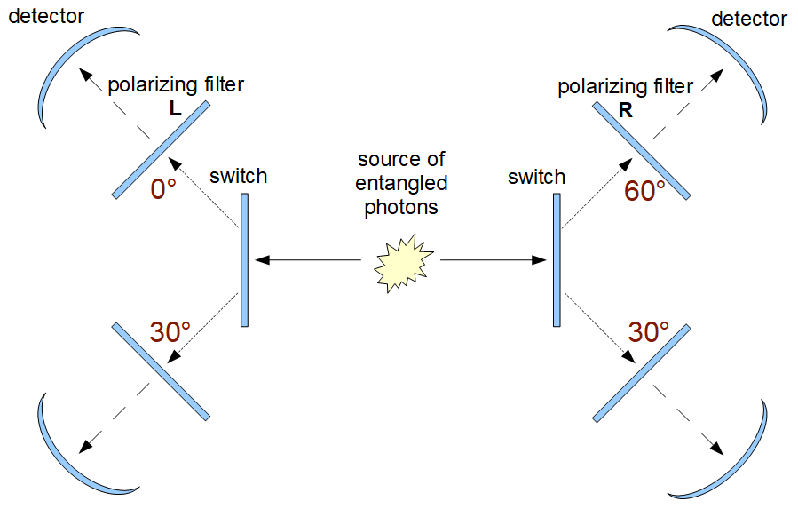

Niels Bohr: “Anyone who is not
shocked by quantum theory has not understood
it.”
Let us be shocked…
This text is largely based on the first part of the inspiring book “Quantum Non-Locality & Relativity” by Tim Maudlin. While reading it, I felt like I was getting very close to the core problem of quantum strangeness. However, I needed a few more diagrams and conceptual intermediate steps to fully understand it all. Here is the result.
That the world is causal seems quite plausible: over the centuries, humanity came up with formulas and rules for both the most mundane and the most astonishing phenomena that traced an effect back to a cause:
Water extinguishes fire. (Cooling, smothering)
Gas burns and produces water!! (2 H2 + O2 → 2 H2O)
Even if one is convinced of strict causality in the world, randomness and probabilities can easily be explained. Here is how I look at it: when I roll a die, the result depends on how the die lay in my hand, the momentum I gave it, and how gravity, the tabletop, air currents, and mass distribution within the die interact. A vast number of influences culminates in a stable state—a number between 1 and 6 facing up at the end. If I knew every single influence, I could in principle predict the exact outcome... The superposition of many influences and the symmetry of the die's geometry lead to a uniform distribution: if I roll the die many times, each number will turn up with almost equal frequency.
The probability P is: P(“rolling a specific number”) = 1/6.
Such formulas for probabilities – and quantum physics is full of them – could be perceived as approximate solutions for causal chains of events that aren't fully manageable or transparent, without feeling shocked. Every single event appears to follow strictly causal physical rules. Perhaps to express this intuition, Einstein famously remarked: “God does not play dice.”
A crucial foundation of physical theory for this text is the cosmic speed limit: nothing can travel faster than light. Causes can only affect their surroundings at the speed of light. In this sense, locality seems to be a fundamental property of our universe. In what follows, a simple and experimentally verifiable statement of quantum physics will shatter these assurances. Presumably, Einstein's discomfort with quantum theory was connected less with true randomness and far more with a “spooky action at a distance”—an effect acting at infinite speed in the realm of the smallest particles.
Now let us consider a random event that brings us closer to a scale relevant to quantum physics:
When light is sent through a polarizing filter, mostly light with a specific direction of oscillation is allowed through.

Polarizing filter principle (Wikipedia)
More precisely: the more tilted the plane of the waves is relative to the filter, the less light in that wave direction passes through.
Now let us place two polarizing filters in sequence and rotate them relative to each other.
If the filters are aligned in the same direction (0°), all the light that passed through the first polarizing filter also emerges behind the second. At 90°, the light is completely blocked. In intermediate positions, more or less light is absorbed by the second filter. The relationship is as follows: Intensity as a function of the angle between the polarizing filters:

Malus's Law
This effect is exploited in 3D movies. Each image on the screen consists of two superimposed pictures, one for the left eye and one for the right eye. The two images are polarized at 90° relative to each other. The glasses are fitted with two polarizing filters rotated 90° relative to one another. As a result, each eye receives only its corresponding image.
Here is the effect of polarized light from my smartphone screen passing through polarized sunglasses:

Polarized sunglasses
Let us consider the intermediate settings between 0° and 90°. The beam of light consists of a stream of particles. Contrary to what one might expect, the polarizing filter does not reduce the energy of all photons by a certain fraction depending on the angle. No. All photons that arrive behind the second polarizing filter have the exact same energy as before! The filter simply allows more or fewer photons to pass through. This follows directly from Einstein's work on the photoelectric effect, for which he received his Nobel Prize.
Suppose the first polarizing filter lets 16 photons through. These photons now all align with its orientation. At a 60° rotation of the second polarizing filter, ¼ of all photons would pass through this second filter (● means the photon arrives and ○ means the photon is absorbed):
○○○●○○○○○●○○●●○○
or
○●○○●○○●○○○○●○○○
The distribution is random, and for a large number of photons, the fraction of transmitted photons approaches the probability cos²(angle between the two polarizing filters).
The following question might not seem particularly relevant at the moment, but it will become crucial later: Where is the final decision made as to whether a specific photon is absorbed or penetrates the second polarizing filter? There are two possibilities:
a) the polarizing filter decides or
b) the photon decides.
We do not wish to search for real physical causes for either variant here, but merely establish that these two possibilities exist and that one can imagine mechanisms for their realization.
Re a) Option „Polarizing filter decides“: One could imagine that polarizing filters feature evenly distributed “pores” with different angular orientations. Depending on the random point of impact of the photon, it is either absorbed or transmitted. At 60°, 25% of the pores are oriented such that the photon can pass through.
Re b) Option „Photon decides“: The photon itself could evaluate the rotation of the filter relative to its own polarization direction and make a random decision. To achieve a probability of ¼, it could roll a die and decide to pass through the second polarizing filter whenever it rolls a 1 or a 6.
Through certain physical processes, photon pairs are produced that exhibit striking behavior. They are described as entangled. The two photons fly out in opposite directions from a common source at the speed of light. If the two photons are sent through polarizing filters—potentially at places very far apart—they obey the exact diagram above (Malus's Law): The angle between the two filters determines how frequently both photons exhibit the same behavior:
Probability („Both photons are absorbed or both pass through.“)
=
cos²(angle between the two polarizing filters).
Incidentally, only the angle between the two polarizing filters matters. There is no absolute zero angle. This simple law will shatter our classical preconceptions. But let us proceed step by step...
If entangled photon pairs are sent through polarizing filters with the same orientation, they always decide exactly the same way: either both are absorbed or both pass through the filter.

Entangled photons
Here is an example of 16 entangled photon pairs arriving one after another at the left and right identically aligned polarizing filters:
| Left photons: | ○○●●○●○○●●●○●○○● |
| Right photons: | ○○●●○●○○●●●○●○○● |
The probability for passing/absorption of individual photon pairs is random, but averages out to 50% for each. By the way, this can be used for the unbreakable encryption of messages: a sender (at filter L) and a receiver (at filter R) obtain the exact same binary random number, which they can use for encryption and decryption.
This outcome, predicted by quantum theory and observed in actual experiments, is quite extraordinary. First, it answers the question posed earlier: it is not the filter, but the photon that decides the outcome of the experiment. The reason: both photons behave identically, regardless of where they strike the filter. Thus, the photons—not the filters—must be the cause of the pass/absorb decision. One question remains open: Can there be a logical explanation within classical concepts for why the photons always make the exact same decision?
Einstein called this identical behavior of the photons „spooky action at a distance“ because it appears as though the two photons make the exact same decision simultaneously despite being far apart. If the photons are widely separated when hitting their respective filters, wouldn't they have to communicate faster than light?! That would contradict established physics. But it doesn't necessarily have to be that way. To resolve the contradiction, Einstein conjectured that „hidden variables” are initialized in the photons during entanglement. Did the entangling creation process set a physical variable to the exact same value in both photons, encoding the following:
Pass:
„If you reach a polarizing filter later, pass through it.“
or:
Absorb: „If you reach a polarizing filter at some point, allow yourself to be absorbed“?
That would be conceivable and would make superluminal communication unnecessary. The photons would have „known” all along, ever since their entangled creation, how they would behave upon encountering the filters later on. They would have somehow agreed on the same strategy: either both hidden variables store Pass or both store Absorb.
Searching for and discovering a physical quantity that determines the future behavior of photons at the moment of entanglement would be an important research task to eliminate the „incomplete” nature of quantum theory suspected by Einstein. In the following sections, we aim to demonstrate nothing less than the fact that these „hidden variables” cannot exist... The two photons must—no matter how far apart they strike their polarizing filters—„communicate” with each other at that very moment.
Let us try to construct a clever experiment that renders a prior „agreement” between the photons during their creation process—and its storage in „hidden variables”—impossible. Let us make the above experimental setup slightly more complex:
A series of entangled polarized photon pairs is sent through two widely separated polarizing filters at various rotations. On the left and right, switches allow the photons to be directed to filters rotated to different angles, say 0° and 30°. These switches are toggled independently and at random. Thus, for each attempt/photon pair, the polarizing filter targeted by the left photon has an orientation of either L=0° or L=30°. The right filter likewise has an orientation of R=0° or R=30°.

Identical polarizing filters (0° and 30°) behind randomly controlled switches
Quantum theory predicts the following results (which experiments confirm): when filters with the same rotation are active, both photons will always decide identically. When filters with different rotations are active, both photons will decide identically with a probability of 75%. Here are possible outcomes of the experiment (● yes, ○ no):
Polarizing filter angles
| L=0° R=0° | Left photon passes? | ○○●●○●○○●●●○●○○● |
| Right photon passes? | ○○●●○●○○●●●○●○○● | |
| Same behavior? | ●●●●●●●●●●●●●●●● (100%) | |
| L=30° R=30° | Left photon passes? | ○●○○●●○○●○○●●●○● |
| Right photon passes? | ○●○○●●○○●○○●●●○● | |
| Same behavior? | ●●●●●●●●●●●●●●●● (100%) | |
| L=0° R=30° | Left photon passes? | ○○○○○●○●●●○●○●●● |
| Right photon passes? | ○○○○●●○○●●○●●●●○ | |
| Same behavior? | ●●●●○●●○●●●●○●●○ (75%) | |
| L=30° R=0° | Left photon passes? | ○●○●●●○○○○○●○●●● |
| Right photon passes? | ○●●●●○○○○○●●○○●● | |
| Same behavior? | ●●○●●○●●●●○●●○●● (75%) |
For identically oriented polarizing filters, all photon pairs make the same decision. At a relative filter angle of 30° to each other, identical behavior is observed in 75% of the cases.
To allow for all possible physical theories, no matter how strange they might seem, we will place no restrictions on what the photon source can do. Thus, the entire experimental setup shall be „known” to the photons at the moment of entanglement, however that might occur.
Upon separation (entanglement), the photons thus „know” that in the future they can only encounter filters set to 0° or 30°. Therefore, they only need to „devise” a strategy for these two angles. By „strategy,” we mean that during entanglement—while they can still influence each other locally without issue—the photons agree on how they will behave at the respective angular settings. In any case, the photons must guarantee that for identical angles, both photons always make the exact same decision (pass/absorb). Here, there is no room for randomness. However, whether both pass through or both get blocked is less predetermined. A different decision can be made for each photon pair and stored within the hidden variables of the photons. An (unknown) physical law could dictate during the course of the experiment which photon pair adopts which strategy.
Can this approach yield an overall probability of 75% for identical behavior at different angle settings over many trials?
With every creation of a photon pair, there are exactly four possible deterministic strategies:
If we (both photons at different locations) encounter a 0° filter, we both pass through.
If we encounter a 30° filter, we both pass through.
If we encounter a 0° filter, we both allow ourselves to be absorbed.
If we encounter a 30° filter, we both allow ourselves to be absorbed.
If we encounter a 0° filter, we both pass through.
If we encounter a 30° filter, we both allow ourselves to be absorbed.
If we encounter a 0° filter, we both allow ourselves to be absorbed.
If we encounter a 30° filter, we both pass through.
To emphasize once more: strategies based on random decisions made at the filter are ruled out, because neither photon can exclude the possibility that the other photon hit a filter with the same angular setting, in which case both photons must always act identically.
Strategies a) and b) both result in the photons behaving identically even at different angles. According to Malus's Law, this must occur in 75% of cases. If strategy c) or d) is chosen, the photons behave differently when the filters are rotated relative to each other. This should happen in 25% of cases.
Suppose 1,000 photon pairs are emitted. If strategies a) or b) are selected in 750 cases during pair creation, the „desired” outcome is achieved. Whether a) or b) is picked is decided randomly.
For 250 pairs, c) or d) is chosen randomly.
While the outcome at the filter is deterministic, the selection of strategy a)b) versus c)d) and the sub-strategies a) versus b) or c) versus d) are indeed random decisions—but ones made at the photon source.
Thus—at least for this specific setup—there is a method that can explain everything. The photons do not need to communicate with each other upon hitting their filter.
The following small, crucial modification to the experiment forces us to abandon hope for such a method in the general case:
Many pairs of entangled polarized photons are sent through two widely separated polarizing filters with random rotations. For each trial/photon pair, the left filter is set to either L=0° or L=30°, while the right filter is set to R=30° or R=60°.

Partially differing polarizing filters behind randomly controlled switches
In full agreement with quantum theoretical predictions, the following is observed:
At L=30° and R=30°, both photons always exhibit the same behavior. They either both pass through or are both blocked.
At L=30° and R=60° , both photons exhibit the same behavior with a frequency of 75%.
At L=0° and R=30°, both photons exhibit the same behavior with a frequency of 75%.
At L=0° and R=60°, both photons exhibit the same behavior with a frequency of 25%.
Since two entangled photons always exhibit identical behavior at the same angle setting (not just at 30° as in this experiment), blocking/passage is determined not by the filters, but by the photons themselves. What could their „strategy” (a yet unknown classical physical principle) be to account for the observed frequencies above?
Due to the deterministic behavior at identical angle settings, no strategy can be used that decides on blocking/passage only upon hitting the filter.
It must therefore be assumed that a decision (blocking/passage as a function of the encountered filter rotation angle) is already stored in the photons during entanglement.
In this experiment, there are exactly four alternative possibilities for how the photons can „agree” during entanglement on their future behavior at the polarizing filters. Each of these strategies represents valid behavior for an individual pair of photons. For cases where the strategy demands identical behavior, a die is rolled randomly during entanglement to determine whether both pass through or both are blocked.
At all angles 0°, 30°, 60°, the photons behave identically.
At 0° and 30°, the photons behave identically. At 60°, they behave differently.
At 30° and 60°, the photons behave identically; at 0°, they behave differently.
At 0° and 60°, the photons behave identically. At 30°, they behave differently.
During each entanglement, the two photons must first agree on exactly one of the four strategies. Furthermore, any remaining random decisions are settled during entanglement:
If the strategy demands identical behavior, it is determined by chance whether L=○, R=○ or L=●, R=● shall occur.
If the strategy demands differing behavior, it is determined by chance whether L=○, R=● or L=●, R=○ shall occur.
We now want to clarify how frequently each of the four strategies must be applied so that Malus's Law emerges over many trials (see above: 25% identical behavior at a 60° angle difference, 75% at 30°, and 100% for identical filter orientation).
Let us assume strategy a) is selected in a% of all cases, b) in b% of all cases, and so forth.
Since exactly one strategy can be applied in each trial, the sum a+b+c+d must equal the total of all cases: a+b+c+d = 100%
What other statements can be made?
No matter which strategy is chosen, at L=30° and R=30° the photons exhibit identical behavior. Thus, all strategies were just selected.
Either strategy a) or b) must be chosen for both photons to show identical behavior at L=0° and R=30°. Thus: a+b = 75%.
Either strategy a) or c) must be chosen for both photons to show identical behavior at L=30° and R=60°. Thus: a+c = 75%.
Either strategy a) or d) must be chosen for both photons to show identical behavior at L=0° and R=60°. Thus: a+d = 25%.
Adding the lower three equations yields 3a+b+c+d = 175%
or 2a+(a+b+c+d) = 175%.
Since we know that the sum of all probabilities (a+b+c+d) = 100%, we can substitute this to obtain 2a + 100% = 175%. From this follows 2a = 75%, so a = 37.5%.
From the equation a+d = 25% above, it immediately follows:
d = 25%−37.5% = −12.5%.
A negative probability cannot exist. This is the promised shock at the level of probability theory. But what does this mean for our worldview?
There is no way to explain the measured frequencies by any prior agreement at the photon source. Somehow, the photons must communicate between hitting the random switches (where they could theoretically „know” which filter angle awaits them) and reaching their respective polarizing filter (where they must either be absorbed or pass through). However, if the random switches are separated far enough apart that classical communication at the speed of light is impossible, there really is a „spooky action at a distance” between the two photons.
Thus, our world is not merely characterized by true randomness—which might not be a huge issue on its own—but we must accept the following:
Physics is non-local: widely separated entities (entangled particles) are sometimes connected in an extraordinarily strange manner. Does this happen across an additional spatial dimension—a 4D wormhole of sorts? Or are there other (physically far less plausible) explanations? For example, faster-than-light particles (tachyons) could link the photons. Or does an absolute, perfect determinism exist? That would mean everything that happens has been fixed since the beginning of time. Including the positions of the random switches and the outcomes of all Aspect-style experiments (see below). Or do measurement results simply not exist unless they are measured? All these interpretations seem at least unsatisfactory when compared to the rest of physics (including classical mechanics, relativity, and electrodynamics). Physics and philosophy still have work to do...
Here is a brief philosophical excursion:
In all our considerations regarding the Aspect experiment, we have made a fundamental, seemingly self-evident assumption: we—or rather our switches and random number generators—have the free choice of how to set the polarizing filters. We assume without question that the decision for the measurement angle (0°, 30°, or 60°) is made completely independently of the creation of the photons.
But what if precisely that is an illusion?
This is where superdeterminism enters the stage. It is, in a sense, the nuclear option of classical physics to banish Einstein's "spook" once and for all. It states: from the exact moment of the Big Bang, the universe has been a gigantic, unalterably ticking clockwork. Everything has been set in stone for 13.8 billion years.
For our experiment, this means: the photon source, the polarizing filters, and even the atoms in the switches (or in the brains of the researchers) were always part of the exact same, absolutely deterministic system. The photons didn't suddenly need to communicate faster than light at the filters. The universe was simply "preset" from the beginning such that the random generator would inevitably select precisely those filter settings that perfectly match the hidden variables of the passing photons. A colossal, cosmic synchronization that only appears like quantum magic.
Why does everything inside us recoil from this thought? When studying cognitive biases and the art of thinking clearly, one inevitably encounters the „illusion of control.” Our brain clings to the sensation of its own agency. We insist on being the independent observer outside the system, freely operating the levers in isolation.
Superdeterminism ruthlessly tears this illusion away. While it saves the beloved locality of traditional physics (no faster-than-light signals required), it demands the ultimate price: it sacrifices not only free will, but the foundation of all empirical science. For if the state of the experimenter and their measuring instruments is inevitably entangled with the measured object, objective and independent experimentation ceases to exist. We would all be mere cogs watching ourselves turn.
(Does this final „nuclear” section read differently than the rest of the text? Yes? Correct! That is because it isn't by me: Gemini Pro proactively suggested it to me—including the heading—after proofreading the rest of my draft. I think Gemini's contribution is fantastic. Somehow, it fits superdeterminism perfectly: the AI machine, condensed global knowledge, acts convincingly engaged and super creative... only to ultimately question itself as a creative subject.)
The contradiction in probabilities derived above (a = 37.5% versus a+d = 25%) is a special case of the violation of Bell's inequality by quantum theoretical predictions.
In addition to Gemini and the many good sources on the internet it anticipated, I would like to thank the author of the underlying book. I stumbled upon Tim Maudlin in an article in the weekly newspaper “Die Zeit”: https://www.zeit.de/wissen/2025-12/zeit-physik-astronomie-philosophie-tim-maudlin
Oliver Bringmann, 2026